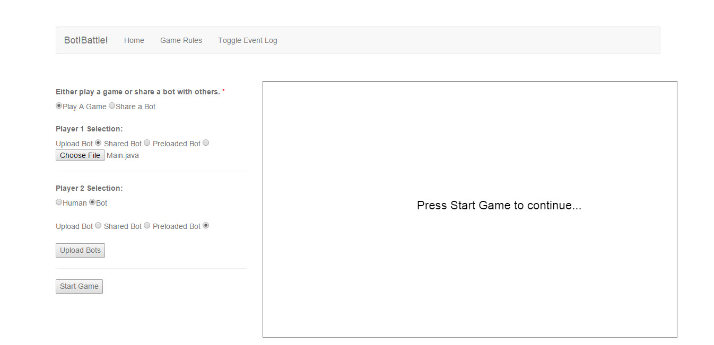
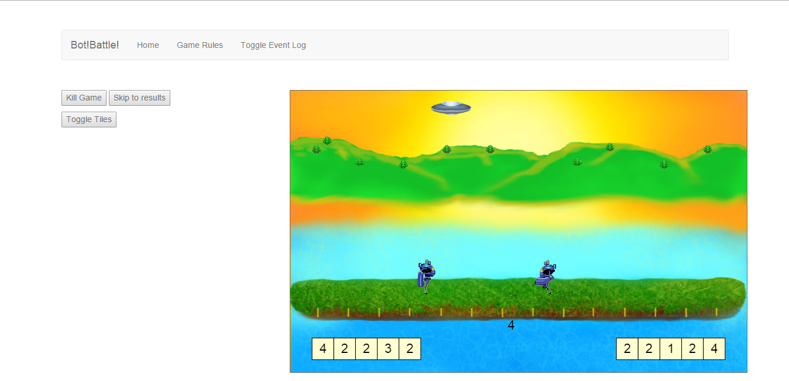
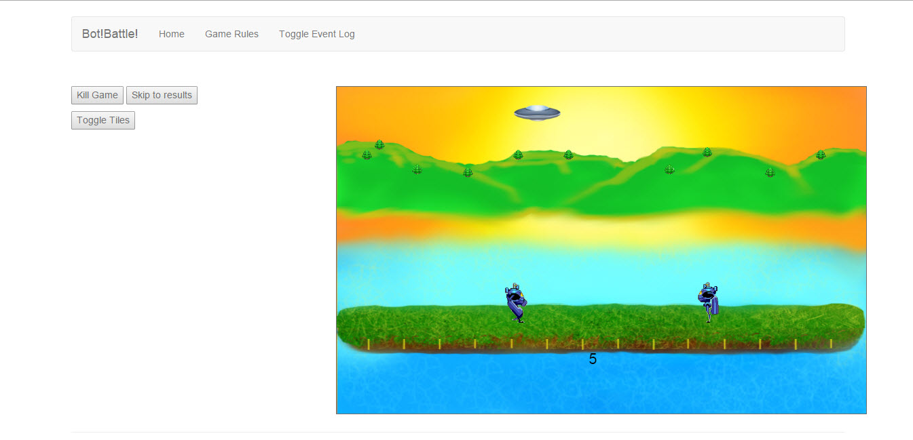
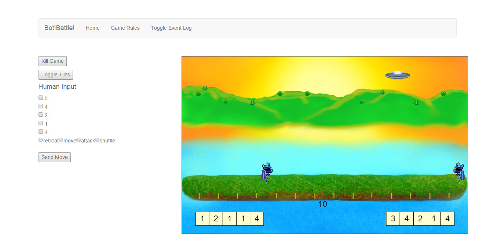

How to use TestArena
The Initial Screen presented to you when you enter the TestArena

This is the Event Log. It holds a list of recent activity. There are good events shown and bad events shown. Clicking clear will clear the log. Pressing the Toggle Event Log will show or hide the log.

Below shows a user that selected to have a game with a preloaded bot and a bot of their design. Once your bots are selected just click "Upload Bots". If your bots compile, and all is well, you will be presented with a "Start Game" button.
Here you see a game in progress. You can press "Kill Game" to just end the game immediately. Pressing "Skip to results" will skip the animation and run through the game to the end while outputting the events in the event lists below the canvas. You can also see an extra game specific button "Toggle Tiles".
Here is an example of the game specific element in use. In this case the games tiles are hidden. Pressing the button again will show the tiles. This section could contain different elements in future games.
These are the lists present to the user during the run of a game.
- Standard Output is a list of all the moves sent by the bots via standard out
- Standard Error is a list of any standard error sent by the bots.
- Move List is an easy to read list of moves that the game has received.
- Board List is the actual board that is sent to each bot.

Here we see a game specific control "Human Input". This will be different for each game available in TestArena. Here we see human input for Save The Island. To use the specific controls check the rules for that game. It will be the same output the bots will use.
To play with a shared bot slect the "Shared Bot" radio button. The shared bot textbox is an autocomplete box. Just enter the bot name you want to play against. You can erase the box text to get a list of all shared bots available.

This is the screen for sharing a bot. You can enter a prefix to your bot to help others find your bot. You should select how long you want your bot to be available to others. Once you upload your bot it will be avaiable to other for battle, but once you
- close the tab
- start a game in the current tab
- your share time has been exceeded